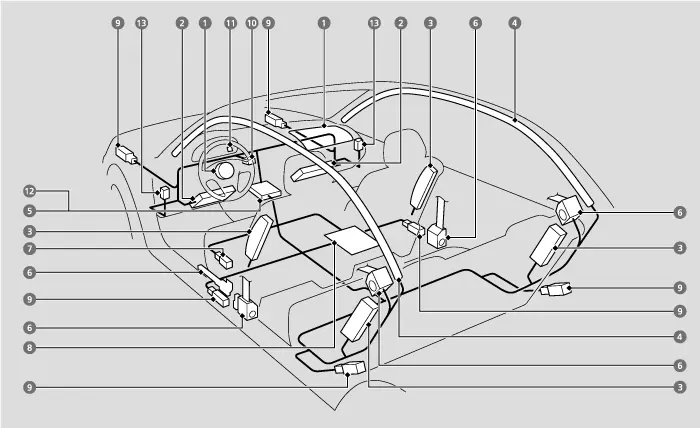
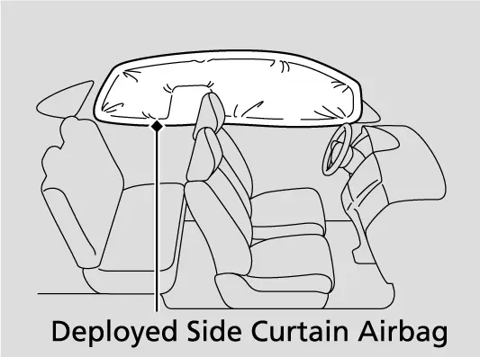
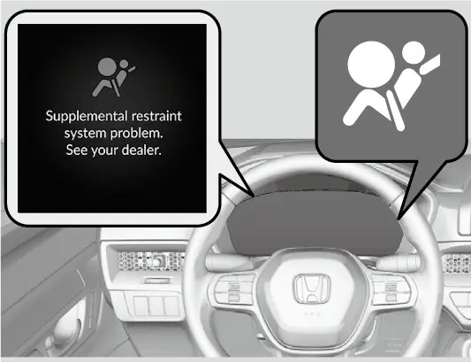
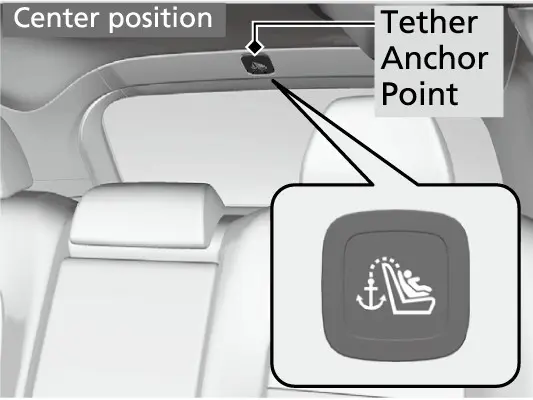

קאפיטל 17
ברעמזן און זיכערהייט
זייטן 270–283 אינעם PDF
ברעמזן: די הארדוועיר
אייער EX האט דיסק ברעמזן ביי אלע פיר רעדער. די פארנטיגע דיסקס זענען ventilated (געלופטערט) און מעסטן 12.3 אינטשעס. ventilated מיינט אז דער דיסק האט אינעווייניגסטע קאנאלן צו קילן, ווייל די פארנטיגע ברעמזן טוען דאס רוב פונעם אפשטעלן. די הינטערשטע דיסקס זענען פול (solid) און מעסטן 12.2 אינטשעס. דער סיסטעם איז הידראוליש: אייער פוס שטופט ברעמז פליסיגקייט, און די פליסיגקייט דריקט צו די פעדס צו די דיסקס. ווען איר דריקט דעם פעדאל, קען זיין אז איר וועט הערן א זשומען פון אונטער דער האוד. דער מאנואל זאגט אז דאס איז דער ברעמז סיסטעם וואס ארבעט, און עס איז נארמאל.
דער EX ברעמז סיסטעם אין קורצן
| זאך | ספעציפיקאציע אדער סטאטוס |
|---|---|
| פארנט ברעמזן | 12.3-אינטש ventilated דיסק |
| הינטן ברעמזן | 12.2-אינטש solid דיסק |
| Brake Assist | סטאנדארט |
| ABS מיט EBD | סטאנדארט |
| VSA מיט טראקשן קאנטראל | סטאנדארט |
| Post-Collision Braking System | סטאנדארט |
געדענקט אז די היבריד מאדעלן האבן א גרעסערן 12.6-אינטש פארנט דיסק. דער 12.3-אינטש פארנט דיסק פונעם EX איז דער זעלבער ווי ביים LX און EX-L.
Brake Assist
Brake Assist (ברעמז-הילף) גיט מער ברעמז-קראפט ווען איר דריקט שטארק דעם פעדאל ביי א נויט-ברעמזונג. אין א שרעק דריקן אסאך דרייווערס גיך, אבער נישט שטארק גענוג. Brake Assist דערקענט אזא נויט-דריק און לייגט צו קראפט צום אפשטעלן. ווען עס ארבעט, קען דער פעדאל זיך א ביסל רירן, און איר קענט הערן א קלאנג פון ארבעט. דער מאנואל רופט דאס נארמאל, און זיין אנווייזונג איז פשוט: האלט ווייטער שטארק אראפגעדריקט דעם ברעמז פעדאל. הייבט קיינמאל נישט אויף דעם פוס נאר ווייל דער פעדאל פילט זיך מאדנע.
Anti-lock Brake System (ABS) און EBD
ביי א זייער שטארקן אפשטעל קען א ראד זיך פארשפארן און רוצשן, און א פארנטיגע ראד וואס רוצשט קען נישט דרייען דעם קאר. ABS (אנטי-לאק ברעמזן) לאזט נישט פארשפארן די רעדער, דורך גיך פאמפן די ברעמזן, אסאך גיכער ווי איר אליין וואלט געקענט. Electronic brake distribution (EBD, עלעקטראנישע ברעמז-פארטיילונג) איז א טייל פון ABS. עס באלאנסירט דאס ברעמזן צווישן פארנט און הינטן לויט ווי שווער דער קאר איז אנגעלאדן. דער מאנואל איז קלאר: פאמפט קיינמאל נישט דעם פעדאל אליין. האלט א שטארקן, גלייכן דריק און דרייט ארום דער סכנה. Honda רופט דאס "stomp and steer" (שטארק טרעטן און דרייען).

ווען ABS ארבעט, קען דער פעדאל פולסירן, און דער פעדאל אדער דער גאנצער קאר קען ציטערן. איר קענט אויך הערן מאטאר-קלאנגען פון אונטער דער האוד. די קלאנגען קענען פאסירן בשעת'ן ברעמזן, און אויך ביי סיסטעם-טשעקס נאכן אנצינדן דעם מאטאר און בשעת דער קאר כאפט גיכקייט. דער מאנואל זאגט אז דאס אלעס איז נארמאל. אויף א טרוקענעם וועג מוזט איר זייער שטארק דריקן איידער ABS הייבט אן צו ארבעטן. אויף שניי אדער אייז קענט איר עס פילן גלייך. ABS קען זיך אויך אקטיווירן אויף נאסע אדער פארשנייטע וועגן, אויף שטיינערנע פלאסטער, און אויף אומגלייכע וועגן ווי לעכער, שפאלטן און מאנהאול דעקלעך. ABS הערט אויף צו ארבעטן אונטער 6 mph (10 km/h).
נויט-אפשטעל ("stomp and steer")
- דריקט דעם ברעמז פעדאל שטארק און גיך; Brake Assist לייגט צו קראפט אויטאמאטיש.
- האלט א שטארקן, גלייכן דריק אפילו ווען דער פעדאל פולסירט, רירט זיך אדער מאכט א קלאנג.
- פאמפט נישט דעם פעדאל; ABS פאמפט די ברעמזן אסאך גיכער ווי איר קענט.
- דרייט ארום דער סכנה בשעת איר האלט ווייטער אראפגעדריקט דעם פעדאל.
פיר פראקטישע ברעמז כללים
- נאכן דורכפארן טיף וואסער, אדער א פלאץ וואו וואסער האט זיך אנגעזאמלט אויפן וועג, טשעקט די ברעמזן. אויב נויטיג, טריקנט זיי אויס דורך לייכט דריקן דעם פעדאל עטליכע מאל.
- א שטענדיגער מעטאלישער רייבן-קלאנג ביים ברעמזן איז דער brake wear indicator (ברעמז-אפגעניצטקייט אינדיקאטאר) וואס רייבט זיך אן דעם ראטאר. דאס מיינט אז די פעדס דארפן געטוישט ווערן, לאזט דעריבער טשעקן דעם קאר ביים דילער. א מאלאמאל א פיפס אדער קוויטש ווען איר דריקט ערשט דעם פעדאל קען זיין נארמאל; דאס קומט פון א הויך-פרעקווענץ ציטערן פון די פעדס אנטקעגן דעם דיסק.
- אויף א לאנגן בארג אראפ, מאכט שטענדיג ברעמזן הייס און שוואכט אפ די ברעמזן. ניצט אנשטאט דעם מאטאר-ברעמזן: לאזט אפ דעם גאז און שיפט אראפ (זעט קאפיטל 14).
- לייגט קיינמאל נישט אוועק אייער פוס אויפן פעדאל בשעת'ן דרייוון. דאס ברעמזט לייכט, שוואכט אפ די ברעמזן מיט דער צייט, פארקירצט דאס לעבן פון די פעדס, און צעמישט די דרייווערס הינטער אייך.
Vehicle Stability Assist (VSA)
VSA (קאר-סטאביליטעט הילף), וואס דער מאנואל זאגט ווערט אויך גערופן Electronic Stability Control (ESC), ניצט די זעלבע ברעמז הארדוועיר. אויב דער קאר דרייט זיך מער אדער ווייניגער ווי איר האט געוואלט אין א קורווע, רעגולירט VSA די מאטאר-קראפט און ברעמזט באזונדערע רעדער, כדי צו העלפן האלטן דעם קאר אויף אייער ליניע. VSA האט אויך טראקשן קאנטראל, וואס העלפט האלטן דעם אנכאפ אויף גליטשיגע וועגן. ווען VSA ארבעט, בלינקט דער VSA אינדיקאטאר, דער מאטאר קען נישט רעאגירן אויפן גאז, און איר קענט הערן א קלאנג פונעם הידראולישן ברעמז סיסטעם. דאס איז דער סיסטעם וואס ארבעט, נישט קיין פעלער. א מאטאר-קלאנג פון אונטער דער האוד ביי סיסטעם-טשעקס גלייך נאכן אנצינדן, אדער בשעת'ן דרייוון, איז אויך נארמאל.
VSA קען נישט פארבעסערן די סטאביליטעט אין יעדן מצב, און עס קאנטראלירט נישט דעם גאנצן ברעמז סיסטעם. איר דארפט נאך אלס דרייוון און נעמען קורוון מיט א גיכקייט וואס פאסט פאר די באדינגונגען, און לאזן א זיכערהייט-שפילרוים.


VSA אויסלעשן, און צוריק אנצינדן
איר קענט טיילווייז אויסלעשן VSA דורך די driver information interface (דרייווער אינפארמאציע סקרין). אויף דעם 7-אינטש דיספליי פונעם EX (דער A-type meter אינעם מאנואל), שטייט די איינשטעלונג אלס " VSA Mode." קאפיטל 14 ווייזט די שריט. Honda רעקאמענדירט עס אויסצולעשן נאר ווען דער קאר שטעקט אין פלאכן בלאטע אדער פרישן שניי און קומט נישט ארויס מיט VSA אן. מיט VSA אויסגעלאשן בלייבן ברעמזן און קורוון נעמען נארמאל, אבער דער טראקשן קאנטראל איז שוואכער, און די רעדער דרייען זיך פרייער ביי נידעריגע גיכקייט. צינדט צוריק אן VSA גלייך ווען איר זענט ארויס; Honda רעקאמענדירט נישט צו דרייוון מיט אים אויסגעלאשן. VSA צינדט זיך אויך אליין צוריק אן יעדעס מאל איר צינדט אן דעם מאטאר.
Post-Collision Braking System
די ספעציפיקאציעס פון Honda שרייבן אז דער Post-Collision Braking System (ברעמזן נאך א קראך) איז סטאנדארט אויפן EX. ער ווערט אקטיוו ווען די עירבעגס אדער סיט בעלט טענשאנערס פלאצן אויף ביי א פראנט-קראך אדער א זייט-קלאפ. דער סיסטעם ברעמזט דעמאלט און באגרעניצט די מאטאר-קראפט, אין דעם זעלבן מאמענט, כדי צו פארמינערן שאדן פון א צווייטן קראך, ווי למשל ווען מען ווערט אריינגעשטופט אין אן אנדערן קאר. ער לעשט זיך אויס ווען דער קאר שטעלט זיך אפ, אדער ווען איר לאזט אפ דעם גאז און דריקט אים נאכאמאל, אזוי אז איר קענט נאך אלס ארויספארן פון א סכנה. ער ווערט נישט אקטיוו אויב זיינע אייגענע טיילן זענען צעבראכן. ווי גוט ער ארבעט הענגט אפ אין די אומשטענדן פונעם קראך, און ער קען נישט פארמיידן צווייטן שאדן אין יעדן פאל. נאך יעדן קראך, קוקט זיך ארום און פארקט פארזיכטיג אין א זיכער ארט. קאפיטל 18 ערקלערט וואס צו טון ווייטער.
דער קערפער-געבוי
נאך איידער די גארטלען און עירבעגס קומען אין שפיל, שיצט אייך דער קערפער פונעם קאר אליין. יעדער CR-V האט Honda'ס Advanced Compatibility Engineering (ACE) קערפער-געבוי. Honda'ס feature guide זאגט אז ACE פארבעסערט די שוץ פאר די פאסאזשירן און די קראך-פאסיגקייט ביי פראנט-קראכן. די נייעסטע ווערסיע איז געבויט צו אפכאפן מער ענערגיע ביי small-overlap פראנט-קראכן, וואו נאר איין פארנטיגער עק פונעם קאר קלאפט אן. Honda זאגט אז מען ערווארט אז אלע CR-V מאדעלן וועלן באקומען די העכסטע קראך-טעסט באווערטונגען.

געדענקט דעם געדאנק פון א געבוי וואס דריקט זיך איין. טיילן פונעם קערפער וואס דריקן זיך איין כאפן אפ די קראך-ענערגיע, דעריבער זאגט אייך נישט די מאס פון שאדן וואס מען זעט, צי אן עירבעג האט געדארפט אויפפלאצן.
סיט בעלטס
דער מאנואל רופט די סיט בעלטס די איינציגסטע מערסט עפעקטיווע זיכערהייט-מיטל. זיי האלטן אייך פארבונדן מיט'ן קאר, לאזן אייך נישט ווערן געווארפן אן די אינעווייניגסטע טיילן, אן אנדערע פאסאזשירן אדער ארויס פונעם קאר, און האלטן אייך אויפ'ן ארט כדי די עירבעגס זאלן קענען העלפן. גארטלען שיצן אייך ביי פראנט-, זייט- און הינטער-קלעפ און ביי איבערקערן. עירבעגס זענען א צוגאב צו די גארטלען; זיי פארבייטן זיי קיינמאל נישט.
אלע פינף זיצן האבן שויס- און אקסל-גארטלען מיט emergency locking retractors (נויט-פארשפארנדיגע אויפוויקלער). ביים נארמאלן דרייוון לאזט דער אויפוויקלער אייך זיך פריי רירן און האלט דעם גארטל א ביסל אנגעצויגן. ביי א קראך אדער א פלוצלינגדיגן אפשטעל פארשפארט ער זיך. אויב איר ציט ארויס דעם גארטל צו גיך, פארשפארט ער זיך אויך; לאזט אים זיך א ביסל צוריקציען, און ציט אים דערנאך ארויס פאמעלעך. דער פארנט פאסאזשיר גארטל און אלע הינטערשטע גארטלען האבן אויך א lockable retractor (אויפוויקלער וואס מען קען פארשליסן) פאר קינדער-זיצן. אויב א פאסאזשיר רירט זיך ארום און ציט ארויס דעם גארטל ביזן סוף, קען דער lockable retractor זיך אריינשטעלן בטעות. כדי עס אפצולאזן, שנאלט אויף דעם גארטל, לאזט אים זיך אינגאנצן צוריקוויקלען, און שנאלט אים דערנאך נאכאמאל צו.
- זיצט גלייך און גוט צוריק אינעם זיץ די גאנצע נסיעה; זיך איינבייגן אדער אנלענען שוואכט אפ דעם גארטל.
- לייגט קיינמאל נישט דעם אקסל-גארטל אונטער דער האנט אדער הינטער די רוקן.
- לאזט קיינמאל נישט צוויי מענטשן טיילן איין גארטל.
- לייגט נישט צו קיין קלעמערלעך, קישעלעך אדער פאזיציע-מיטלען צום גארטל.
סיט בעלט רימיינדערס
ביי די פארנטיגע זיצן, אויב דער power mode איז ON און א גארטל איז נישט צוגעשנאלט, הערט מען א ביפער און דער אינדיקאטאר בלינקט. נאך עטליכע סעקונדעס הערט אויף דער ביפער, און דאס ליכטל בלייבט אן ביז מען שנאלט צו דעם גארטל. בשעת דער קאר פארט, ביפט און בלינקט דער סיסטעם יעדע שטיק צייט ביז דער גארטל ווערט צוגעשנאלט. דער אינדיקאטאר צינדט זיך אויך אן אויב דער פארנט פאסאזשיר שנאלט זיך נישט צו אין זעקס סעקונדעס נאכדעם וואס דער power mode ווערט געשטעלט אויף ON.

דער פאסאזשיר זיץ ניצט א וואג-סענסאר, דעריבער גיט א ליידיגער זיץ נישט קיין ווארענונג. א זייער לייכטער פאסאזשיר, ווי א קליין קינד, קען עס אויך נישט אויסלעזן. אזא קינד געהערט אויפן הינטערשטן זיץ, ווייל א פארנטיגער עירבעג וואס פלאצט אויף קען עס שטארק פארוואונדן אדער הרג'ענען. אויפן דיספליי ווייזן די פארנטיגע ערטער גרין פאר צוגעשנאלט, א גרויע אומצוגעשנאלטע בילד ווען מען דערקענט נישט קיין פאסאזשיר, און א רויטע אומצוגעשנאלטע בילד ווען מען דערקענט א פאסאזשיר וואס איז נישט צוגעשנאלט.
די הינטערשטע זיצן ווערן אויך נאכגעקוקט. דער מיטער דיספליי ווייזט דעם סטאטוס פון די הינטערשטע גארטלען ווען דער power mode ווערט ON מיט א הינטערשטן גארטל אומצוגעשנאלט, נאכדעם וואס מען עפנט און פארמאכט א הינטערשטע טיר, און יעדעס מאל ווען איינער שנאלט צו אדער אויף א הינטערשטן גארטל. ביי די הינטערשטע זיצן מיינען די בילדער אזוי:
הינטערשטע סיט בעלט סטאטוס בילדער
| דיספליי | באדייט |
|---|---|
| גרין | גארטל צוגעשנאלט |
| גרויע אומצוגעשנאלטע בילד | נישט צוגעשנאלט לעצטנס |
| רויטע אומצוגעשנאלטע בילד | אויפגעשנאלט לעצטנס |
אויב א הינטערשטער גארטל ווערט אויפגעשנאלט בשעת'ן דרייוון, אדער אויב דער קאר הייבט נאכאמאל אן צו פארן בשעת א בילד איז רויט, בלינקט דער אינדיקאטאר און דער ביפער קלינגט. דער מאנואל איז ערליך וועגן די גרענעצן. דער סיסטעם קען נישט דערקענען א הינטערשטן פאסאזשיר וואס האט קיינמאל נישט צוגעשנאלט קיין גארטל. ער קוקט אויך נישט נאך די גארטלען פון קינדער-זיצן אדער LATCH anchors, און ער קען אייך נישט זאגן צי א קינדער-זיץ איז ריכטיג איינגעשטעלט. טשעקט די הינטערשטע גארטלען ביים אנהייב פון יעדע נסיעה און יעדעס מאל ווען איינער זעצט זיך אוועק הינטן.
אויטאמאטישע סיט בעלט טענשאנערס
די פארנטיגע זיצן און די צוויי עק-זיצן הינטן האבן אויטאמאטישע סיט בעלט טענשאנערס (גארטל-אנציער). ביי א מיטלמעסיגן ביז שווערן פראנט-קראך ציען זיי גלייך אן די גארטלען, א מאל אפילו ווען דער קראך איז נישט שטארק גענוג צו אויפבלאזן די פארנטיגע אדער קני עירבעגס. ביי א מיטלמעסיגן ביז שווערן זייט-קלאפ ווערן די טענשאנערס אויף ביידע זייטן פונעם קאר אקטיוו. זיי ארבעטן אויך ביים איבערקערן.
עירבעגס
לויט'ן מאנואל האט אייער CR-V צען עירבעגס פון פיר סארטן. אן עלעקטראנישע קאנטראל-יוניט קוקט זיי נאך אלעמאל ווען דער power mode איז ON. זי קוקט אויף די קלאפ-סענסארן, די זייט-קלאפ דרוק-סענסארן, דעם איבערקער-סענסאר, די שנאל-סענסארן אין ביידע פארנטיגע גארטלען, דעם דרייווער זיץ פאזיציע-סענסאר, און די וואג-סענסארן אינעם פאסאזשיר זיץ. בשעת א קראך קען זי פארשרייבן די אינפארמאציע. די עירבעגס קענען זיך אויפבלאזן יעדע צייט ווען דער power mode איז ON.
די צען עירבעגס
| סארט | צאל | ארט און באצייכענונג |
|---|---|---|
| פארנט | 2 | מיטן סטירינג וויל, פאסאזשיר דעשבארד; SRS AIRBAG |
| קני | 2 | אונטער'ן סטירינג קאלום און גלאוו באקס; SRS AIRBAG |
| זייט | 4 | אויסערליכע עקן פון די פארנטיגע און הינטערשטע עק-זיץ רוקנס; SIDE AIRBAG |
| זייט פירהאנג | 2 | סופיט איבער די זייט-פענצטער; זיילן באצייכנט SIDE CURTAIN AIRBAG |

נאכדעם וואס עירבעגס פלאצן אויף קענט איר זען א ביסל רויך. דער מאנואל זאגט אז ער קומט פונעם פארברענען דעם מאטעריאל וואס בלאזט אויף, און ער איז נישט שעדליך. מענטשן מיט אטעם-פראבלעמען קענען פילן א צייטווייליגע אומבאקוועמליכקייט, און זאלן ארויסגיין פונעם קאר ווי נאר עס איז זיכער.
פארנט עירבעגס
SRS מיינט Supplemental Restraint System (צוגאב-שוץ סיסטעם), א דערמאנונג אז דער גארטל בלייבט די ערשטע שוץ. די פארנט עירבעגס בלאזן זיך אויף ביי א מיטלמעסיגן ביז שווערן פראנט-קראך, צי גלייך פארנט, צי שיף, צי אין א פעסטן חפץ, צו שיצן דעם קאפ און די ברוסט. דערנאך לאזן זיי גלייך ארויס די לופט, אזוי אז איר קענט זען און דרייען. דער גאנצער פראצעס איז אזוי גיך, אז רוב פאסאזשירן באמערקן נישט אז די עירבעגס האבן אויפגעפלאצט ביז זיי זעען זיי. נאענט צו דער גרענעץ פון אויפפלאצן קען זיך אויפבלאזן נאר איין פארנט עירבעג; אין אזא פאל גיט דער גארטל גענוג שוץ.
דאס זענען advanced (פארגעשריטענע) עירבעגס. זיי קענען זיך אויפבלאזן מיט פארשידענע גיכקייטן, לויט ווי שווער דער קראך איז, צי מען איז צוגעשנאלט, און נאך זאכן. דער דרייווער'ס סיסטעם ניצט דעם זיץ פאזיציע-סענסאר צו אויסקלייבן דאס בעסטע אויפפלאצן. דער פאסאזשיר'ס סיסטעם ניצט וואג-סענסארן צו אנצינדן דעם עירבעג פאר דערוואקסענע און אויסלעשן פאר א קליין קינד אדער בעיבי.
פארנט עירבעגס זענען נישט געמאכט פאר קליינע פראנט-קראכן, זייט- אדער הינטער-קלעפ, אדער איבערקערן. ביי א הינטער-קלאפ זענען די קאפ-שטיצעס און גארטלען אייער בעסטע שוץ. ביים איבערקערן שיצן אייך די גארטלען און די זייט פירהאנג עירבעגס. א שטארקער קלאפ אין א קערב אדער אין דעם עק פון א לאך קען אויפפלאצן די עירבעגס מיט ווייניג שאדן וואס מען זעט, ווייל דער קלאפ איז אונטערן קאר. פון דער אנדערער זייט, א קראך מיט גרויס שאדן דארף זיי מעגליך גארנישט.
כדי די advanced פארנט עירבעגס זאלן ארבעטן ריכטיג, מאכט זיכער:
- דער פאסאזשיר זיצט גלייך, צוגעשנאלט, דער זיץ-רוקן איז נישט צופיל צוריקגעלייגט, און ער לענט זיך נישט אן די טיר אדער קאנסאל.
- די פיס זענען אויפן פלאר פאר'ן פאסאזשיר.
- גארנישט הענגט פונעם פאסאזשיר זיץ, און נאר קליינע לייכטע זאכן זענען אינעם זיץ-רוקן קעשענע.
- דער סטירינג וויל און דער פאסאזשיר דעשבארד זענען נישט פארשטעלט מיט קיין חפץ.
- קיין פליסיגקייט איז נישט פארגאסן אויף אדער אונטער'ן זיץ.
- קיין קינדער-זיץ אדער חפץ דריקט נישט אן דעם רוקן פונעם פאסאזשיר זיץ, און קיין הינטערשטער פאסאזשיר שטופט אדער ציט עס נישט.
- גארנישט ליגט אונטער אדער לעבן דעם פאסאזשיר זיץ, די קאפ-שטיצע רירט נישט אן דעם דאך, און דער פלאר מאט הינטער'ן פאסאזשיר זיץ ליגט גלאט אויף זיין ריכטיגן ארט.
קני עירבעגס
די צוויי קני עירבעגס זיצן אונטער'ן סטירינג קאלום און אונטער דער גלאוו באקס, אויך באצייכנט SRS AIRBAG. זיי פלאצן אויף צוזאמען מיט די פארנט עירבעגס צו האלטן דעם דרייווער און פאסאזשיר אין דער ריכטיגער פאזיציע, אזוי אז דער גארטל און דער פארנט עירבעג קענען טון זייער ארבעט. א קני עירבעג קען זיך אפילו אויפבלאזן אליין ביי א קראך צו שוואך פאר'ן פארנט עירבעג. גלייך ווי די פארנט עירבעגס, קען א קני עירבעג אויפפלאצן נאך א קלאפ פון אונטן מיט ווייניג שאדן וואס מען זעט, אדער בלייבן אויסגעלאשן ביי א קראך מיט גרויס איינגעדריקטן שאדן.
הענגט נישט אויף קיין צוגאבן אויף אדער לעבן די קני עירבעג דעקלעך. האלט נישט קיין זאכן אונטער אייער זיץ אדער הינטער אייערע פיס, ווייל זיי קענען שטערן דאס אויפפלאצן.
זייט עירבעגס
די פיר זייט עירבעגס זיצן אין די אויסערליכע עקן פון ביידע פארנטיגע זיץ-רוקנס און די צוויי הינטערשטע עק-זיץ רוקנס, יעדער באצייכנט SIDE AIRBAG. זיי שיצן דעם גוף און דאס בעקן ביי א מיטלמעסיגן ביז שווערן זייט-קלאפ, און נאר די זייט וואס ווערט געטראפן פלאצט אויף. Honda'ס feature guide זאגט אז די פארנטיגע זייט עירבעגס זענען געמאכט ארויסצולאזן לופט איידער זיי בלאזן זיך אינגאנצן אויף, אויב עמיצער איז אין זייער וועג. א זייט עירבעג קען נישט אויפפלאצן אויב דער קלאפ איז צום גאר פארנטיגן אדער הינטערשטן טייל פונעם קאר, אדער אויב איינדריקנדיגע קערפער-טיילן כאפן אפ רוב פון דער ענערגיע.
הענגט נישט אויף קיין צוגאבן לעבן די זייט עירבעגס. דעקט נישט צו און טוישט נישט די זיץ-רוקן איבערצוגן אן פרעגן ביים דילער. לענט זיך נישט אריין אינעם עירבעג'ס וועג. יעדע פארנטיגע טיר האט א דרוק-סענסאר וואס קאנטראלירט דאס אויפפלאצן פונעם זייט עירבעג, דעריבער רעדט מיט אן אויטאריזירטן דילער איידער איר טוישט אדער פאררעכט א פארנטיגע טיר.
זייט פירהאנג עירבעגס
די side curtain (זייט פירהאנג) עירבעגס זענען אינעם סופיט איבער די זייט-פענצטער. זיי שיצן די קעפ פון די וואס זיצן אויף די עק-זיצן ביי א מיטלמעסיגן ביז שווערן זייט-קלאפ, און העלפן נישט לאזן פאסאזשירן ווערן ארויסגעווארפן דורך די פענצטער, בפרט ביים איבערקערן. אויב דער איבערקער-סענסאר דערקענט אז דער קאר גייט זיך איבערקערן, פלאצן אויף ביידע פירהאנגען, און די פארנטיגע און הינטערשטע עק טענשאנערס ווערן אקטיוו. איינער אדער ביידע פירהאנגען קענען זיך אויך אויפבלאזן ביי א מיטלמעסיגן ביז שווערן שיפן פראנט-קראך. ביי א קלאפ אויף דער פאסאזשיר זייט פלאצט אויף דער פירהאנג אויף דער פאסאזשיר זייט אפילו ווען קיינער זיצט נישט אויף יענער זייט.

הענגט קיינמאל גארנישט אויף אויף די זייט-פענצטער אדער דאך-זיילן.
זיצן זיכער מיט עירבעגס
עירבעגס בלאזן זיך אויף מיט א געוואלדיגן כח. זיי קענען פאראורזאכן ברענונגען, בלויע פלעקן און אנדערע וואונדן, און אפילו טויטליכע, אויב די פאסאזשירן זענען נישט צוגעשנאלט און זיצן נישט ריכטיג. בעיביס, קליינע קינדער און נידעריגע דערוואקסענע זענען אין די גרעסטע סכנה.
- זיצט גלייך און אזוי ווייט צוריק פונעם סטירינג וויל ווי מעגליך, בשעת איר האט פולע קאנטראל; דער פארנט פאסאזשיר זאל זיך רוקן אזוי ווייט צוריק פונעם דעשבארד ווי מעגליך.
- האלט דעם וויל פון ביידע זייטן, און לייגט קיינמאל נישט א האנט אריבער איבער'ן עירבעג דעקל.
- האלט נישט קיין הארטע אדער שארפע זאכן אויף די קני, און דרייווט קיינמאל נישט מיט א ליולקע אדער אנדערע שארפע זאך אינעם מויל.
- הענגט קיינמאל נישט אויף און לייגט גארנישט אויף די SRS AIRBAG דעקלעך.
- פרובירט קיינמאל נישט אויסצולעשן די עירבעגס.
Passenger airbag off אינדיקאטאר
דער passenger airbag off אינדיקאטאר (פאסאזשיר עירבעג אויסגעלאשן) איז אויפן קאנסאל פאנעל. ווען איר שטעלט דעם power mode אויף ON, צינדט ער זיך אן פאר עטליכע סעקונדעס אלס זעלבסט-טשעק, און ווייזט דערנאך דעם יעצטיגן סטאטוס. ווען ער איז אן, פלאצן נישט אויף סיי דער פאסאזשיר פארנט עירבעג און סיי דער פאסאזשיר קני עירבעג. דאס פאסירט ווען דער זיץ איז ליידיג אדער ווען די וואג-סענסארן דערקענען א קליין קינד אדער בעיבי. א קליינער דערוואקסענער קען נישט דערקענט ווערן, לויט זיין גוף און ווי ער זיצט, און ווען די וואג אויפן זיץ איז נאענט צו דער גרענעץ, קען דער אינדיקאטאר זיך אן און אויס צינדן יעדע שטיק צייט.
אויב דער אינדיקאטאר בלייבט אן מיט א דערוואקסענעם אויפן פאסאזשיר זיץ
- מאכט זיכער אז דער פאסאזשיר זיצט גלייך, צוגעשנאלט, מיט די פיס אויפן פלאר, און דער זיץ-רוקן איז נישט צופיל צוריקגעלייגט.
- טשעקט אז גארנישט הענגט פון, ליגט אונטער אדער לעבן, אדער דריקט אן דעם זיץ, און אז קיין הינטערשטער פאסאזשיר שטופט נישט אן דעם זיץ-רוקן.
- טשעקט אז דער פלאר מאט הינטער'ן פאסאזשיר זיץ ליגט גלאט און די קאפ-שטיצע רירט נישט אן דעם דאך.
- מיט דער טראנסמיסיע אין P, שטעלט דעם power mode אויף OFF און דערנאך צוריק אויף ON.
- אויב דער אינדיקאטאר איז נאך אלס אן, לאזט נישט דעם דערוואקסענעם פארן דארט, און לאזט טשעקן דעם קאר ביים דילער ווי שנעלער.
גייט אויך צום דילער ווי שנעלער אויב דער אינדיקאטאר איז אויסגעלאשן ווען דער זיץ איז ליידיג, אדער אויב ער צינדט זיך נישט אן און לעשט זיך נישט אויס נאכדעם וואס איר שטעלט דעם power mode אויף ON.
SRS אינדיקאטאר
דער SRS אינדיקאטאר אויפן אינסטרומענט פאנעל דעקט דעם גאנצן עירבעג און טענשאנער סיסטעם. ביי power ON צינדט ער זיך אן פאר עטליכע סעקונדעס און לעשט זיך דערנאך אויס, וואס מיינט אז דער סיסטעם איז דורכגעטשעקט. אויב ער צינדט זיך אן אין אן אנדער צייט, אדער בכלל נישט, לאזט אים טשעקן ביים דילער ווי שנעלער, ווייל די עירבעגס און טענשאנערס קענען נישט ארבעטן ווען מען דארף זיי. א מעלדונג באווייזט זיך אויך אויפן מיטער דיספליי. אויב דער דרייווער זיץ פאזיציע-סענסאר אדער א פאסאזשיר וואג-סענסאר גייט קאליע, צינדט זיך אן דער SRS אינדיקאטאר. דער עירבעג וועט נאך אלס אויפפלאצן ביי א קראך, אבער מיט א כח לויט נאר ווי שווער דער קראך איז, אן צופאסן צו דער זיץ פאזיציע אדער דער גרייס פונעם פאסאזשיר.


היטן די עירבעגס
פאררעכט אדער טוישט קיינמאל נישט אליין קיין עירבעג טייל. נאכן אויפפלאצן מוז מען טוישן די קאנטראל-יוניט און פארבונדענע טיילן, און א טענשאנער וואס האט געארבעט מוז אויך געטוישט ווערן. נאך א מיטלמעסיגן ביז שווערן קראך, אפילו אויב קיין עירבעגס האבן זיך נישט אויפגעבלאזן, לאזט דעם דילער דורכקוקן דעם דרייווער זיץ פאזיציע-סענסאר, די פאסאזשיר זיץ וואג-סענסארן, די פארנטיגע און הינטערשטע עק טענשאנערס, און יעדן גארטל וואס מען האט געטראגן ביים קראך. נעמט נישט ארויס און טוישט נישט א פארנטיגן זיץ אן פרעגן ביים דילער, ווייל דאס קען אויסלעשן די זיץ-סענסארן. אויב א זיץ מוז געטוישט ווערן פאר א מענטש מיט א מגבלה, רופט א Honda דילער, אדער פאר אמעריקאנער קארס American Honda Automobile Customer Service אויף 1-800-999-1009 (אין קאנאדע, Honda Canada Customer Relations אויף 1-888-9-HONDA-9)Honda . רעקאמענדירט נישט צו ניצן עירבעג טיילן פון צעבראכענע קארס, אריינגערעכנט עירבעגס, טענשאנערס, סענסארן און קאנטראל-יוניטס.
קינדער פאסאזשירן
דער מאנואל זאגט אז קינדער פון 12 יאר און יינגער זאלן פארן ריכטיג אפגעזיכערט אויף א הינטערשטן זיץ. האלט קיינמאל נישט א קינד אויף די קני, לייגט קיינמאל נישט איין גארטל איבער זיך און א קינד, און לאזט קיינמאל נישט צוויי קינדער טיילן איין גארטל. לאזט נישט קינדער ארבעטן מיט די טירן, פענצטער אדער זיץ-איינשטעלונגען. יעדער אומגעניצטער גארטל וואס א קינד קען דערגרייכן זאל זיין צוגעשנאלט, מיט'ן lockable retractor אקטיווירט און דער גארטל אינגאנצן צוריקגעוויקלט, אזוי אז דאס קינד זאל נישט קענען שפילן דערמיט אדער עס ארומוויקלען ארום'ן האלדז. Honda שרייבט אז child-proof (קינדער-זיכערע) הינטערשטע טיר לאקס און דער Rear Seat Reminder זענען סטאנדארט. לאזט קיינמאל נישט קינדער אליין אינעם קאר: אינעווייניג קען ווערן געפערליך הייס, א קינד קען רירן דעם קאר, און די קליימעט קאנטראל קען זיך אויסלעשן יעדע צייט.
בעיביס און קליינע קינדער
א בעיבי פארט אין א rear-facing (קוקנדיג צוריק) קינדער-זיץ ביז ער דערגרייכט די וואג אדער הייך גרענעץ פונעם זיץ-פאבריקאנט, שטענדיג הינטן און קיינמאל נישט פארנט. בעיביס זאלן קיינמאל נישט קוקן פאראויס. א ריכטיג איינגעשטעלטער rear-facing זיץ קען שטערן דעם פארנטיגן זיץ זיך צו רוקן אינגאנצן צוריק אדער פארשליסן זיין רוקן וואו איר ווילט. מאכט זיכער אז די צוויי זיצן רירן זיך קיינמאל נישט אן, ווייל אן אנרירן קען אויך שטערן די פאסאזשיר'ס advanced עירבעג סענסארן. אויב נויטיג, שטעלט איין דעם קינדער-זיץ גלייך הינטער'ן פאסאזשיר זיץ, רוקט יענעם פארנטיגן זיץ פאראויס און לאזט אים ליידיג, אדער קלייבט אויס א קלענערן rear-facing זיץ.
ווען א קינד וואקסט ארויס פונעם rear-facing זיץ, ניצט א פעסט אפגעזיכערטן forward-facing (קוקנדיג פאראויס) זיץ ביז דאס קינד גייט אריבער זיינע גרענעצן. Honda רעקאמענדירט שטארק דעם הינטערשטן זיץ אויך פאר דעם. אויב איר מוזט אבסאלוט שטעלן איינעם פארנט, רוקט דעם קאר-זיץ אזוי ווייט צוריק ווי מעגליך און זיכערט אפ דאס קינד ריכטיג.
ביים קויפן א קינדער-זיץ, רעכנט דער מאנואל אויס דריי באדינגונגען:
- דער זיץ איז דער ריכטיגער טיפ און גרייס פאר'ן קינד.
- דער זיץ איז דער ריכטיגער טיפ פאר דעם זיץ-ארט.
- דער זיץ פאסט צו Canadian Motor Vehicle Safety(Federal Motor Vehicle Safety Standard 213 Standard 213 אין קאנאדע).
פאלגט די אנווייזונגען און עקספייר-דאטעס פונעם זיץ-פאבריקאנט, און ניצט שטענדיג א tether (אנבינד-שנור) פאר forward-facing זיצן, סיי ווען איר שטעלט איין מיט LATCH און סיי מיט'ן סיט בעלט.
LATCH איינשטעלונג
LATCH מיינט Lower Anchors and Tethers for Children (אונטערשטע אנקערס און אנבינד-שנורן פאר קינדער). יעדער הינטערשטער עק-זיץ האט א פאר אונטערשטע אנקערס. דער מיטלסטער זיץ האט נישט קיין אייגענע אונטערשטע אנקערס. די אינעווייניגסטע און אויסערליכע אנקערס פון יעדן פאר זענען 11 אינטשעס (280 mm(פונאנדער, און די צוויי אינעווייניגסטע אנקערס זענען 17 אינטשעס)432.6 mm) פונאנדער. א rigid-type (שטייף) LATCH זיץ קען נישט גיין אין מיטן. א fel xible-type (בייגעוודיג) זיץ מעג ניצן די צוויי אינעווייניגסטע אנקערס אין מיטן נאר אויב זיין פאבריקאנט ערלויבט קלאר אזא אפשטאנד.
איינשטעלן א LATCH קינדער-זיץ אויף א הינטערשטן עק-זיץ
- געפינט די אונטערשטע אנקערס אינעם קנייטש פונעם זיץ.
- שטעלט דעם קינדער-זיץ אויפן קאר-זיץ און צוטשעפעט אים צו די אונטערשטע אנקערס לויט די אנווייזונגען פונעם קינדער-זיץ, און מאכט זיכער אז קיין סיט בעלט אדער חפץ פארשטעלט נישט די אנקערס.
- הייבט אויף די קאפ-שטיצע צו דער העכסטער פאזיציע און פירט דעם tether שנור צווישן די פיסלעך פון דער קאפ-שטיצע.
- מאכט זיכער אז דער שנור איז נישט פארדרייט, צוטשעפעט דעם tether האק צום אנקער הינטער'ן זיץ, און ציט אים אן לויט די אנווייזונגען פונעם קינדער-זיץ פאבריקאנט.
- שאקלט דעם קינדער-זיץ פאראויס און צוריק און פון זייט צו זייט; מען זאל פילן נאר א ביסל באוועגונג.
- שנאלט צו און פארשליסט יעדן אומגעניצטן גארטל וואס א קינד קען דערגרייכן.
אויבערשטער tether פאר'ן מיטלסטן זיץ
דער tether אנקער פונעם מיטלסטן זיץ איז אינעם סופיט. לאזט אראפ אינגאנצן די מיטלסטע קאפ-שטיצע, עפנט דאס אנקער-דעקל, פירט דעם שנור איבער דער קאפ-שטיצע, האלט אים נישט פארדרייט, צוטשעפעט אים צום אנקער, און ציט אים אן לויט די אנווייזונגען פונעם קינדער-זיץ פאבריקאנט. א tether קען אויך צוגעבן זיכערקייט צו א זיץ וואס איז איינגעשטעלט מיט'ן סיט בעלט.

איינשטעלן מיט'ן סיט בעלט
איר קענט איינשטעלן א קינדער-זיץ מיט'ן שויס- און אקסל-גארטל אויף יעדן הינטערשטן זיץ, אדער אויפן פארנט פאסאזשיר זיץ אויב עס איז אבסאלוט נויטיג.
איינשטעלן א קינדער-זיץ מיט'ן סיט בעלט
- שטעלט דעם קינדער-זיץ אויפן קאר-זיץ, פירט דעם גארטל דורך אים לויט די אנווייזונגען פונעם פאבריקאנט, און שטופט אריין די שנאל-פלאטע אינעם שנאל ביז עס קנאקט.
- ציט פאמעלעך ארויס דעם אקסל-גארטל ביזן סוף ביז ער שטעלט זיך אפ; דאס אקטיווירט דעם lockable retractor.
- לאזט דעם גארטל זיך צוריקוויקלען עטליכע אינטשעס און ציט אים א ריס. אויב ער לאזט זיך ווייטער ארויסציען, איז דער אויפוויקלער נישט פארשלאסן, דעריבער ציט אים פאמעלעך ארויס ביזן סוף און טוט עס נאכאמאל.
- מיט אייער וואג וואס שטופט דעם קינדער-זיץ אריין אינעם קאר-זיץ, כאפט דעם אקסל-גארטל נאענט צום שנאל און ציט ארויף צו נעמען דעם לויזן ארויס פונעם שויס-טייל.
- שאקלט דעם קינדער-זיץ; עס זאל זיין ווייניגער ווי איין אינטש באוועגונג נאענט צום גארטל.
כדי אפצולאזן דאס פארשליסן, שנאלט אויף דעם גארטל און לאזט אים זיך אינגאנצן צוריקוויקלען.
גרעסערע קינדער און בוסטער זיצן
ווען א קינד איז צו גרויס פאר א קינדער-זיץ, זעצט דאס קינד גלייך און גאנץ צוריק אויף א הינטערשטן זיץ מיט'ן שויס- און אקסל-גארטל, און ענטפערט דערנאך אויף פיר שאלות:
- בייגן זיך די קני באקוועם איבער'ן עק פונעם זיץ?
- גייט דער אקסל-גארטל צווישן דעם האלדז און דער האנט?
- איז דער שויס-גארטל אזוי נידעריג ווי מעגליך, און רירט אן די דיכן?
- קען דאס קינד בלייבן אזוי זיצן די גאנצע נסיעה?
יעדער "ניין" מיינט אז מען דארף א בוסטער זיץ אויפן הינטערשטן זיץ. ניצט סיי א הויכן סיי א נידעריגן בוסטער, וועלכער עס לאזט דעם גארטל פאסן ריכטיג. געוויסע סטעיטס פארלאנגען בוסטערס ביז א באשטימטן עלטער אדער וואג, למשל 6 יאר אדער 60 פונט, דעריבער טשעקט דאס לאקאלע געזעץ. אויב א גרעסער קינד מוז פארן פארנט, רוקט דעם זיץ אינגאנצן צוריק, לאזט דאס קינד זיצן גלייך, און טשעקט ווי דער גארטל פאסט.
קארבאן מאנאקסייד
די מאטאר-אויסגעס האט קארבאן מאנאקסייד, א גאז אן קאליר, אן ריח, און זייער סמ'דיג. א קאר וואס ווערט גוט אנגעהאלטן האלט עס אינדרויסן פונעם קאר, אבער א גאראזש פילט זיך אן גיך. לאזט קיינמאל נישט לויפן דעם מאטאר מיט פארמאכטע גאראזש טיר, און פארט ארויס גלייך נאכן אנצינדן, אפילו מיט אן אפענע טיר. געדענקט דאס ווען איר ניצט remote engine start (אנצינדן דעם מאטאר פון דער ווייטנס, קאפיטל 21). לאזט טשעקן די עקזאסט פאר לעקס אויב ער הערט זיך מאדנע, אויב ער קען זיין צעבראכן, אדער יעדעס מאל ווען דער קאר ווערט אויפגעהויבן פאר אן אויל-טויש.
אויב איר מוזט דרייוון מיט'ן טעילגעיט אפן
- עפנט אלע פענצטער.
- קלייבט אויס fresh air mode (פרישע לופט).
- שטעלט דעם פען אויף הויך.
- שטעלט די טעמפעראטור אויף א באקוועמע איינשטעלונג.
ניצט די זעלבע קליימעט איינשטעלונגען ווען איר זיצט אינעם געפארקטן קאר מיט'ן מאטאר לויפנדיג.
זיכערהייט ווארנונג לייטס


דאס רויטע פארקינג ברעמז און ברעמז סיסטעם ליכטל צינדט זיך אן ווען דער פארקינג ברעמז איז אן (זעט קאפיטל 6). אויב דאס ABS ליכטל צינדט זיך אן בשעת'ן דרייוון, בלייבט דאס נארמאלע ברעמזן, אבער ABS קען נישט ארבעטן, דעריבער גייט גלייך צום דילער. אויב דאס VSA ליכטל צינדט זיך אן און בלייבט אן בשעת'ן דרייוון, גייט אויך גלייך צום דילער, אפילו אויב דאס נארמאלע דרייוון ווערט נישט באווירקט. דאס SRS ליכטל מיינט א באזוך ביים דילער ווי שנעלער.
נאכדעם וואס די באטעריע איז צוריק פארבונדן געווארן, קענען די VSA, געלער ברעמז סיסטעם, ACC, low tire pressure/TPMS און safety support אינדיקאטארן זיך אנצינדן אין געל מיט א מעלדונג. פארט א קורצע שטרעקע איבער 12 mph (20 km/h). אויב עפעס פון זיי בלייבט אן, לאזט טשעקן דעם קאר ביים דילער (זעט קאפיטל 20).
אפט-געפרעגטע שאלות
אפטע פראגעס
פראגע: דער פעדאל האט געזשומעט און דער קאר האט געציטערט ביי א שטארקן אפשטעל אויף אייז. איז עפעס צעבראכן?
ענטפער: ניין. דאס איז ABS וואס ארבעט. פולסירן, ציטערן און מאטאר-קלאנג זענען נארמאל; האלט א שטארקן דריק און דרייט.
פראגע: קען איך אליין אויסלעשן דעם פאסאזשיר עירבעג פאר א קינד?
ענטפער: ניין. פרובירט קיינמאל נישט אויסצולעשן עירבעגס. די וואג-סענסארן לעשן אויס דעם פאסאזשיר פארנט און קני עירבעג פאר א קליין קינד, אבער קינדער פון 12 און יינגער געהערן הינטן.
פראגע: דער פראנט איז שטארק צעבראכן געווארן אבער קיין עירבעג האט נישט אויפגעפלאצט. איז דער סיסטעם קאליע?
ענטפער: נישט דווקא. איינדריקנדיגע קערפער-טיילן כאפן אפ ענערגיע, און געוויסע קראכן דארפן נישט קיין עירבעגס. פונדעסטוועגן, נאך יעדן מיטלמעסיגן ביז שווערן קראך, לאזט דעם דילער דורכקוקן די סענסארן, טענשאנערס און גארטלען.
פראגע: קען א קינדער-זיץ גיין אויפן הינטערשטן מיטלסטן זיץ?
ענטפער: יא, מיט'ן סיט בעלט און דעם tether אנקער אינעם סופיט. מיט LATCH, נאר א fel xible-type זיץ וועמענס פאבריקאנט ערלויבט דעם 17-אינטש אפשטאנד צווישן די אינעווייניגסטע אנקערס; rigid-type זיצן קענען נישט.
פראגע: פארוואס האט זיך VSA צוריק אנגעצונדן נאכדעם וואס איך האב אים אויסגעלאשן?
ענטפער: VSA צינדט זיך אן יעדעס מאל איר צינדט אן דעם מאטאר. Honda רעקאמענדירט אים אויסצולעשן נאר כדי ארויסצוהעלפן א קאר וואס שטעקט.
הויפט פונקטן
- ביי א נויט, דריקט שטארק דעם ברעמז, האלט אים, און דרייט; פאמפט קיינמאל נישט דעם פעדאל.
- ABS האלט די קאנטראל איבער'ן דרייען אבער מאכט נישט קירצער דעם אפשטעל-ווייט; עס הערט אויף צו ארבעטן אונטער 6 mph.
- ניצט VSA OFF נאר כדי ארויסצוהעלפן א קאר וואס שטעקט, און צינדט עס דערנאך צוריק אן.
- Post-Collision Braking ברעמזט דעם קאר נאך א קראך; לאזט אפ און דריקט נאכאמאל דעם גאז כדי אוועקצופארן.
- טראגט די גארטלען ריכטיג און זיצט גוט צוריק פון די צען עירבעגס.
- א טענשאנער וואס האט געארבעט אדער יעדער עירבעג וואס האט אויפגעפלאצט מוז געטוישט ווערן ביים דילער.
- קינדער פון 12 און יינגער פארן אפגעזיכערט הינטן; ניצט שטענדיג א tether פאר forward-facing זיצן.
- יעדעס ברעמז, ABS, VSA אדער SRS ליכטל וואס בלייבט אן איז א סיבה צו גיין צום דילער.